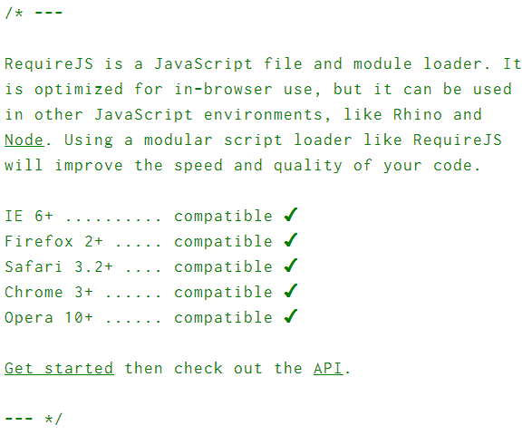
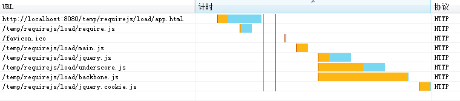

初探のRequireJS
A JAVASCRIPT MODULE LOADER
Created by JesseDeng / Tencent
2014/02/27
RequireJS 是什么
一个javascript模块加载器
RequireJS 是什么
RequireJS 是一个javascript文件和模块的加载器
RequireJS 做什么
RequireJS 根据我们的配置，按照依赖关系加载文件或模块
程序代码：
require.config({
// 指定模块路径
paths:{
'jquery':'jquery',
'underscore':'underscore',
'backbone':'backbone',
'jquery.cookie':'jquery.cookie'
},
shim:{
'jquery.cookie':['jquery','underscore','backbone'] // 指定依赖关系
}
});
require(['jquery.cookie'], function(){
console.log('loaded!');
});
RequireJS 解决什么
- 脚本文件引入的依赖关系
- 模块化编程
- 代码依赖
- 代码共用
以前我们这样引入js：
<script type="text/javascript" src="1.js"></script>
<script type="text/javascript" src="2.js"></script>
<script type="text/javascript" src="3.js"></script>
<script type="text/javascript" src="4.js"></script>
<script type="text/javascript" src="5.js"></script>
<script type="text/javascript" src="6.js"></script>
现在我们这样写：
<script type="text/javascript" src="require.js" data-main="main.js"></script>
以前我们这样避免冲突：
// 匿名函数
(function(){
// some code
})()
// 命名空间
var QQ = {};
var QQ.Hello = {};
现在我们这样写：
define('QQ.Hello',[], function(){});
以前我们这样解决依赖：
/**
* @reqires login.js
*/
QQ.Login.quit();
现在我们这样写：
define('QQ.Hello',['base/login.js'], function(login){
login.quit();
});
以前我们这样共用代码：
/**
* copy from common.js
*/
// some code
现在我们这样写：
define('QQ.Hello',['base/common.js'], function(common){
// some code
});
今天我们不讲什么
- 不讲(dong)AMD还是CMD
- 不深(qing)究(chu)循环嵌套100层的性能问题
- 不比(liao)较(jie)哪个模块加载器更好
- 不说(dong)requirejs的优点
- 不说(dong)requirejs的缺点
今天我们讲点什么
- requirejs 的基础用法
- 模块编写
- 模块打包
- mini版本 almond.js
- grunt 插件
requirejs 的基础用法
在html中插入script标签
<script data-main="scripts/main" src="scripts/require.js"></script>
main.js代码如下：
// 告诉requirejs程序入口的执行依赖 helper/util.js 这个文件
require(["helper/util"], function(util) {
// 加载完成 helper/util.js 后，程序开始执行
util.log('hello world!');
});
注意：require只能调用一次，作为一个应用程序的唯一入口
require.config基本配置
require.config({
baseUrl: "/another/path", // 所有模块的根路径
paths: {
"some": "some/v1.0" // 路径映射
},
waitSeconds: 15 // 模块加载超时时间
});
// "/another/path/some/v1.0/module"
// "/another/path/my/module"
// "/another/path/a.js"
// "/another/path/b.js"
require( ["some/module", "my/module", "a.js", "b.js"],
function(someModule, myModule) {
// ...
}
);
require.config依赖管理
require.config({
shim: {
'backbone': {
deps: ['underscore', 'jquery'], // 依赖关系
exports: 'Backbone' // 定义模块名
},
'underscore': {
exports: '_'
},
'jquery': {
exports: '$'
}
}
});
require(['backbone','underscore','jquery'],
function(Backbone, _, $){
// ...
}
);
RequireJs模块编写
// 键值对
define({
color: "black",
size: "unisize"
});
// 有方法调用的键值对
define(function(){
return {
color: "black",
size: "unisize"
}
});
// 有依赖关系的模块
define(["lib/jquery", "lib/backbone"],
function($, Backbone) {
// some code
}
}
);
// 定义了模块名有依赖关系的模块
define('module/hello',["lib/jquery", "lib/backbone"],
function($, Backbone) {
// some code
}
}
);
// CMD方式
define(function(require, exports, module) {
var a = require('a'),
b = require('b');
//Return the module value
return function () {};
}
);
模块打包
安装requirejs
> npm install requirejs
执行打包命令
> node r.js -o baseUrl=. paths.jquery=some/other/jquery name=main out=main-built.js
# build.js:
# ({
# baseUrl: ".",
# paths: {
# jquery: "some/other/jquery"
# // jquery: "empty:" // 不包含jquery
# },
# name: "main", // 项目主文件名
# out: "main-built.js" // 编译后生成的文件名
# })
> node r.js -o build.js
mini版RequireJs almond
almond是一个requirejs的mini实现，适用于代码最终会打包成一个文件的项目
{
baseUrl: '.',
name: 'path/to/almond',
include: ['main'],
out: 'lib-built.js',
wrap: {
startFile: 'path/to/start.frag',
endFile: 'path/to/end.frag'
}
}
> node r.js -o build.js
编译后生成的文件lib-built.js：
// start.frag
...
// almond.js
...
// main.js and other javascript code
...
// end.frag
...
grunt插件
grunt-contrib-requirejs
使用r.js编译requirejs项目的grunt插件，用法：
grunt.loadNpmTasks('grunt-contrib-requirejs');
requirejs: {
apply: {
options: {
baseUrl: 'src/app',
name: '../vendor/almond',
include: 'ApplyMain',
out: 'dist/app/apply.js',
optimize: 'none',
wrap: {
start: '(function($, _, Backbone, CC) {',
end: '}($, _, Backbone, CC));'
}
}
}
}
最后，requirejs改变了什么
- 脚本文件加载的方式
- 文件依赖管理的方式
- 代码管理的方式
- 编程的方式